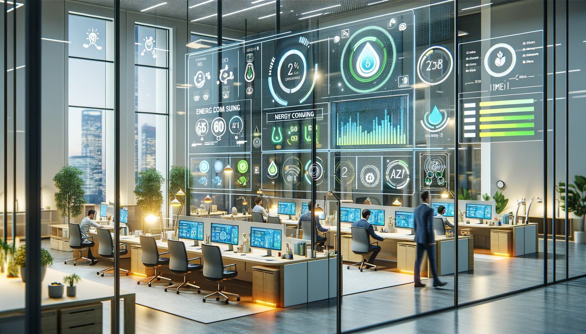
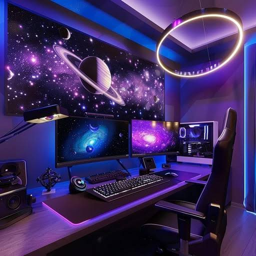
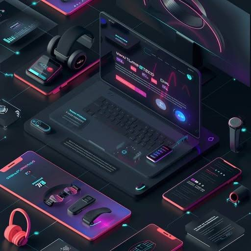

DISCOVER THE FUTURE OF SMART LIVING :-
Transform your everyday experience with innovative technology designed to make life simpler, faster and more connected. From intelligent devices to seamless digital solutions, explore a world where convenience meets creativity. Join thousands of usres who are embracing smarter ways to work, learn and live.
TECHNOLOGIES :-




WHY CHOOSE SMART-TECH ?
Our platform combines cutting-edge technology with user-friendl design to deliver exceptional experiences. Whether you're managing your home, boosting productivity or staying connected, smart-tech provides reliable solutions tailored to modern lifestyle.
FEATURES :-
-
Feature 1:- Fast performance -
Experience lightning-fast responses and smooth operation accross all devices. -
Feature 2:- Secure & reliable -
Advanced security measures keep your data protected at all times. -
Feature 3:- Easy to use -
A clean and intuitive interface makes navigation effortless for everyone.
READY TO UPGRADE YOUR LIFE-STYLE ?
Start your journey today and explore powerful tools designed to simplify daily tasks and enhance productivity.